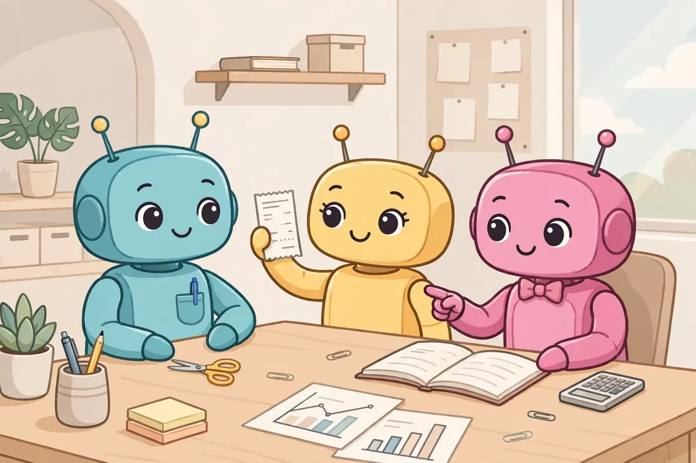
同样的办公室活各跑 9 遍：免费 Claude 全部拿满，Manus 最贵但最稳
Towards AI 作者 Faheem Munshi 10 月 16–17 日做了一次硬核实测：给 Lindy、Manus 和 Claude 免费版布置同样的三件办公室活，每件各跑 3 次，共 27…
副业、免费额度、薅羊毛：普通人怎么用 AI 赚钱省钱

Towards AI 作者 Faheem Munshi 10 月 16–17 日做了一次硬核实测：给 Lindy、Manus 和 Claude 免费版布置同样的三件办公室活，每件各跑 3 次，共 27…
Towards AI 作者 Faheem Munshi 10 月 16–17 日做了一次硬核实测：给 Lindy、Manus 和 Claude 免费版布置同样的三件办公室活，每件各跑 3 次，共 27 遍，全程录屏、用标准答案判分，最后算的不是月费，而是"做完一件活到底花多少钱"。
合同摘要：Lindy 每次约 **$0.02**，3 次全过；Manus **$0.23**，全过；Claude 免费版 **$0**，全过。CSV 表格对账：Lindy $0.59、Manus $0.48，全部通过；Claude 免费版 $0，同样全过。写 5 封冷邮件序列：Lindy $0.04 但只过了 1 次，Manus $0.15 且 3 次全过，Claude 免费版 $0、过了 1 次。
结论很扎心：合同摘要、表格对账这类"有标准答案的活"，Claude 免费版一分钱不花全拿满，付费的反而贵；但到了"没标准答案的活"（写冷邮件），Manus 的稳定性就值回票价了。
普通人怎么用：先别急着掏钱订阅 AI 助手。手头有合同要看、有表格要对，先拿免费版试三遍，能全过的活就别付费；只有写文案、做方案这种要"稳定发挥"的复杂活，才值得给 Manus 这类按量付费的产品掏钱。
IDM（Internet Download Manager）的平替又来了个狠角色：FluxDown，一个用 Rust 写的开源下载管理器。网页文件、FTP、BT 磁力链、电驴链接全支持，多线程分段下载…
IDM（Internet Download Manager）的平替又来了个狠角色：FluxDown，一个用 Rust 写的开源下载管理器。网页文件、FTP、BT 磁力链、电驴链接全支持，多线程分段下载、断点续传这些 IDM 的看家本事它都有。官网 fluxdown.zerx.dev 明确写着：免费、没广告、不用注册、不跟踪你下了什么——下载记录和设置全存在本机 SQLite 里。
Rust 重写带来的直接好处是快和稳：同一引擎同时驱动桌面 App、NAS 用的网页版、命令行和安卓 App，浏览器插件一键接管下载。更狠的是它内置了一个 MCP 服务器——你用的 Claude Desktop、Cursor 这类 AI 工具，可以直接指挥它下载、管理任务，下载器也开始吃"AI 自动化"这碗饭了。
适用人群：经常下大文件、网盘转存、BT 党，以及受够了 IDM 弹窗和付费的人。开源协议是 AGPL-3.0，代码全公开，信不过的可以自己审。
避坑点：项目很新（官网和仓库都在快速迭代），早期版本主要支持 Windows，现在官网列的桌面、网页、CLI、安卓都在补齐。BT 速度归根结底看种子多少，这点它也救不了。安装前去官网看一眼最新版说明，别拿着旧教程折腾。
普通人怎么用：先去 fluxdown.zerx.dev 下最新安装包，装完把浏览器扩展装上，以后点下载链接自动接管。先拿一个 1GB 以上的文件测测速度和断点续传，顺手再用了，就把 IDM 卸载了。

OpenRouter 官方博客挂着一条限时优惠：平台上线的全部 ElevenLabs 模型一律半价，截止到 10 月 19 日早上 8 点（太平洋时间），也就是北京时间 10 月 19 日晚上 11 …
OpenRouter 官方博客挂着一条限时优惠：平台上线的全部 ElevenLabs 模型一律半价，截止到 10 月 19 日早上 8 点（太平洋时间），也就是北京时间 10 月 19 日晚上 11 点。
这次上架的是 9 个文字转语音模型加 2 个语音转文字模型。用法很直接：你的应用如果已经在调 OpenRouter 的语言模型，现在加两行调用就能让它开口说话、听懂语音——POST /api/v1/audio/speech 做语音合成，POST /api/v1/audio/transcriptions 做转写，不用再单独开 ElevenLabs 账号。做长内容旁白用 Eleven v4，做实时语音助手用 v4 Turbo（定价本来就是 v4 的一半），会议记录、字幕转写用 Scribe v2（带说话人区分和词级时间戳）。
这笔账对做内容的人最划算：播客、YouTube 旁白、AI 配音视频，平时 TTS 是按字符烧钱的，半价窗口里把囤着的长文案一次转完，能省下一半预算。v4 Turbo 本来定价就是 v4 的一半，这波再打五折，实时语音的成本压到很低。
普通人怎么用：今天之内去 OpenRouter 开通，把待配音的文案清单列好，19 号晚上 11 点前跑完。注意截止时间是太平洋时间，别按北京时间算错成 19 号早上。
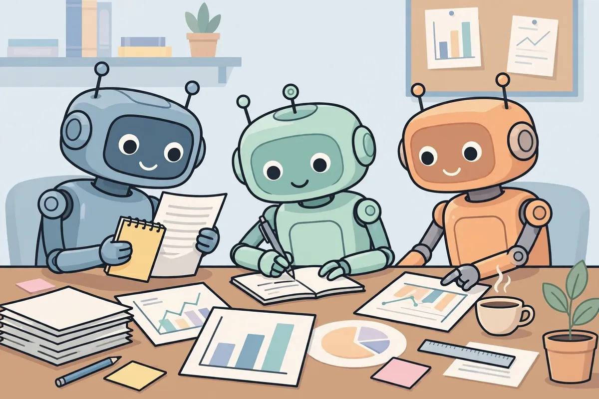
@gkxspace 在 Teamily 上搭了一组 Agent，分工做内容：结构拆解 Agent 负责扒爆款的骨架，网感审查 Agent 负责把稿子打回去重写，热点监控 Agent 负责配话题，创作 …
@gkxspace 在 Teamily 上搭了一组 Agent，分工做内容：结构拆解 Agent 负责扒爆款的骨架，网感审查 Agent 负责把稿子打回去重写，热点监控 Agent 负责配话题，创作 Agent 按模板生成。
这套玩法的聪明之处是"互相挑刺"。创作 Agent 写完，审查 Agent 按网感标准打回，改到过关为止。一个人写稿容易自我感动，多个 Agent 接力等于给自己配了个编辑部：有人写、有人审、有人盯热点。
普通人不用照搬 Teamily，思路可以直接抄。写公众号或短视频文案时，开两个 AI 对话框：一个写、一个审，审的那个只负责挑毛病——标题够不够具体、开头三秒能不能留人、结尾有没有行动点。
普通人怎么用：下次写推文前，先让 AI 拆 3 篇你所在领域的爆款，提炼出结构模板；再让另一个 AI 按模板写、按标准审。同一套流程跑顺了，就是你的内容生产线。
据 @op7418 分享，开源终端编程工具 OpenCode 接入了 DeepSeek V4.1 Flash：免费版给 200K 上下文，付费版给到 1M。
据 @op7418 分享，开源终端编程工具 OpenCode 接入了 DeepSeek V4.1 Flash：免费版给 200K 上下文，付费版给到 1M。
200K 上下文约等于 15 万汉字，一次性能吞下整个中小型项目的代码。写代码的 AI 工具里，上下文越大，一次能记住的项目结构越多，改 Bug 时误伤别处代码的概率越低。
OpenCode 本身免费开源，配上 DeepSeek V4.1 Flash 这种便宜大碗的模型，等于低成本的结对编程：让它读代码、写注释、修 Bug，复杂决策自己拍板。
普通人怎么用：终端里装好 OpenCode，把模型切到 DeepSeek V4.1 Flash，先拿它给老项目写 README 和注释练手——这是最安全、也最能感受到上下文长度价值的用法。免费额度以应用内实际显示为准。
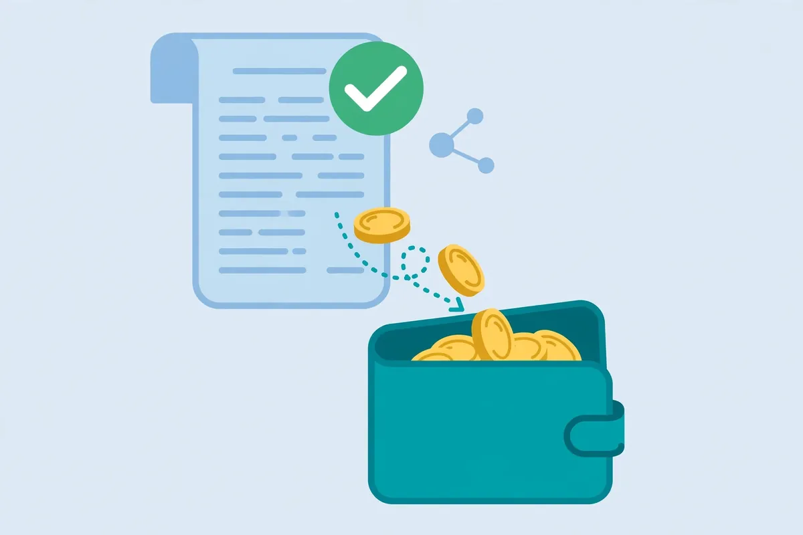
据 @op7418 分享，DeepSeek 对 10 月 15 日的 API 故障做了赠金补偿：过去 7 天的 API 消耗里，故障时段（北京时间 10 月 15 日 8:11–13:04）相关的部分…
据 @op7418 分享，DeepSeek 对 10 月 15 日的 API 故障做了赠金补偿：过去 7 天的 API 消耗里，故障时段（北京时间 10 月 15 日 8:11–13:04）相关的部分退还赠金。
故障持续了约 5 小时，正好卡在工作日上午。做 AI 应用的人最怕这个：接口一挂，自己的服务跟着挂，用户还以为是你的问题。有补偿总比没有强，至少对得起付过费的开发者。
这类补偿一般是自动到账，不用申请。普通人怎么用：如果你或你的团队在用 DeepSeek API，去控制台查一下账单，看赠金是否到账。顺手做一件事：给关键业务加个备用模型切换——主接口挂掉时自动切到备用，5 小时的故障就不会变成 5 小时的停服。
9 月底，一套叫 PhotoCraft 的开源软件上线，10 月中旬在 GitHub 冲到接近 **5 万星**。它长得像 Photoshop，用起来也像，但不要钱，不连 Adobe 服务器。
9 月底，一套叫 PhotoCraft 的开源软件上线，10 月中旬在 GitHub 冲到接近 **5 万星**。它长得像 Photoshop，用起来也像，但不要钱，不连 Adobe 服务器。
最有意思的是它的出生方式：前 storyteller.ai CEO Brandon Thomas 带团队，让多个 AI 智能体用 Claude Opus 5.5 写 Rust 代码，一口气交出 **7 个 Adobe 平替**：PhotoCraft 对标 Photoshop，VectorCraft 对标 Illustrator，FilmCraft 对标 Premiere，还有 Lightroom、AE、InDesign、PDF 工具的替代品。项目声明是 clean-room 实现：只看公开文档和软件行为重写，没碰 Adobe 一行代码。PSD 兼容测下来，309 个测试文件 **307 个**渲染一致。
作者自己在 ROADMAP 里很实在：跟真 Photoshop 的还原度还不到 **50%**，普通人常用功能 60%–70% 有了，能靠它吃饭的专业人士只有 25%–35%。项目 10 月 11 日还在更新。
普通人怎么用：为 PS 订阅肉疼、平时只做抠图调色加字的人，可以先装来试试；学生党、做自媒体封面的，它大概率够用了。专业修图师先别动，等它再长大一点。
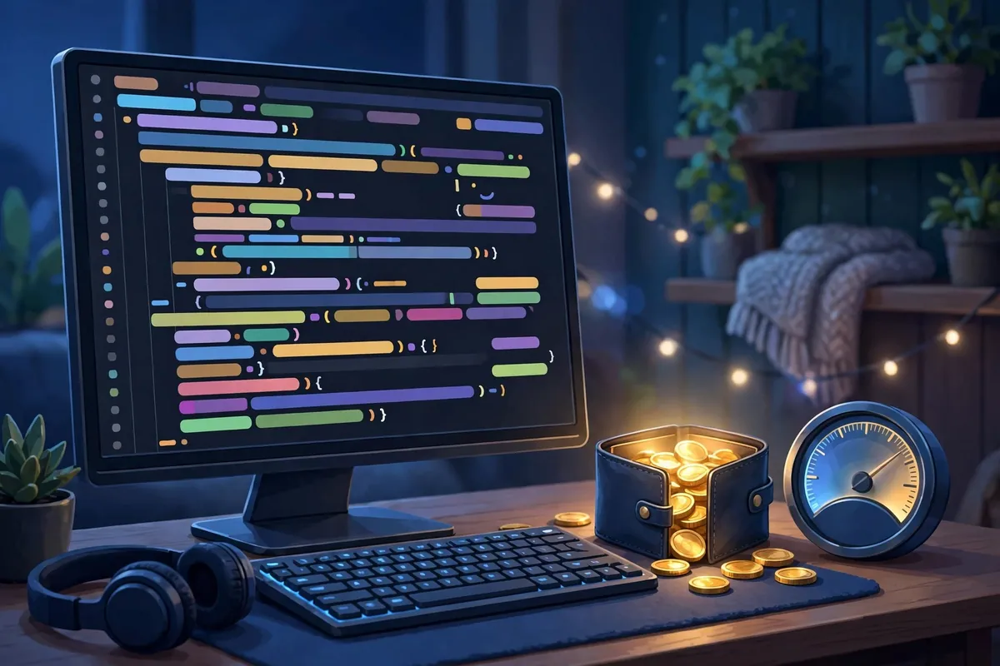
用 Claude Code 写代码的人，最近 collective 焦虑两件事：账单和封号。10 月 12 日 X 上的两条帖子，正好把这两件事摆到了一起看。
用 Claude Code 写代码的人，最近 collective 焦虑两件事：账单和封号。10 月 12 日 X 上的两条帖子，正好把这两件事摆到了一起看。
先说账单。AYi（@AYi_AInotes）分享了一套控制 Token 消耗的命令建议，核心思路就三条：先看清钱花在哪——定期查用量账单，知道哪个环节最烧；别让模型背着一整座代码山干活——任务拆小、上下文给够但别给多；重复性高的活写成固定流程，别每次都让模型现想。Claude Code 是按 token 计费的，上下文窗口越大、来回轮次越多，账单越刺激，省 token 本质上是省"无效思考"。
再说封号。Kin（@KinGao476942）转述：Claude 2026 年上半年封禁 **1140 万**账号，申诉成功只有 **4.2 万**——这是博主转述的说法，官方没确认过，看看就好。他的建议倒是实在：在 Grok bot 里稳定地用 Claude Code，别把鸡蛋放一个篮子。
普通人怎么用：已经在用 Claude Code 的，今天就去看一眼用量账单，设个心理预算线；重度用户把常用任务沉淀成固定命令。重要项目的 key 和配置留个备份，别等封了才想起来。
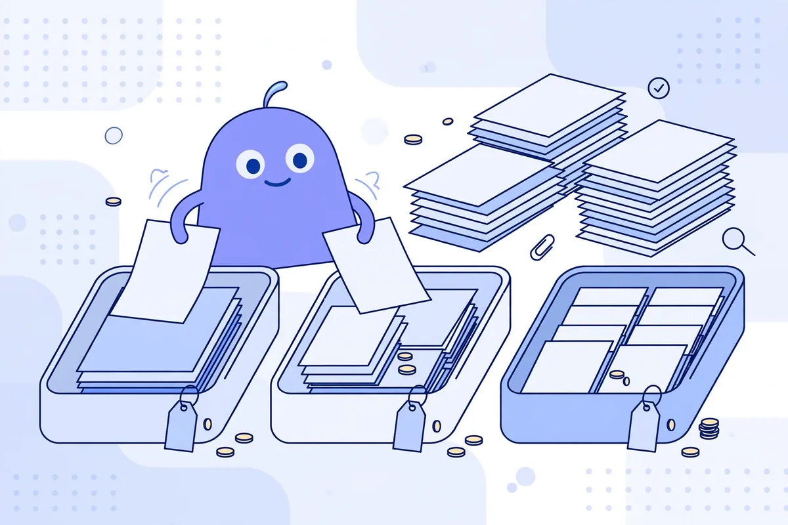
Anthropic 在 10 月 7 日上线 Claude Haiku 5.5，定位还是干重复活的小模型：做摘要、打标签、查数据库、接客服。价格砍得很狠。提示词在 10 万 token 以内时，输入每…
Anthropic 在 10 月 7 日上线 Claude Haiku 5.5，定位还是干重复活的小模型：做摘要、打标签、查数据库、接客服。价格砍得很狠。提示词在 10 万 token 以内时，输入每百万 token 收 **0.10 美元**，输出收 **0.50 美元**；超过这个长度，输入涨到 0.50 美元，输出涨到 2.50 美元。官方说，平均下来比上一代 Haiku 4.5 便宜约 **75%**。
便宜之外，能力也补上来了。上下文 100 万 token，最多输出 12.8 万 token，还首次加了 effort 档位，可选省钱或多算一会儿。Asana 试用后说延迟降了三成多，速度最高快到 2.5 倍。现在在 Claude 平台、AWS、谷歌云和微软 Azure 都能调用，模型名是 claude-haiku-5-5。Anthropic 同时把 Sonnet 5.5 缓存读取价砍半。
避坑点：新分词器会多吃一点 token，账单别按旧经验估；超过 10 万 token 后单价翻五倍，长文档先切块。
普通人怎么用：手里有批量改写、分类、提摘要这类活，先把其中一小批切到 Haiku 5.5 跑一遍，对照旧模型看对错率。质量过关再全量切换，省下的钱比换大模型实在。
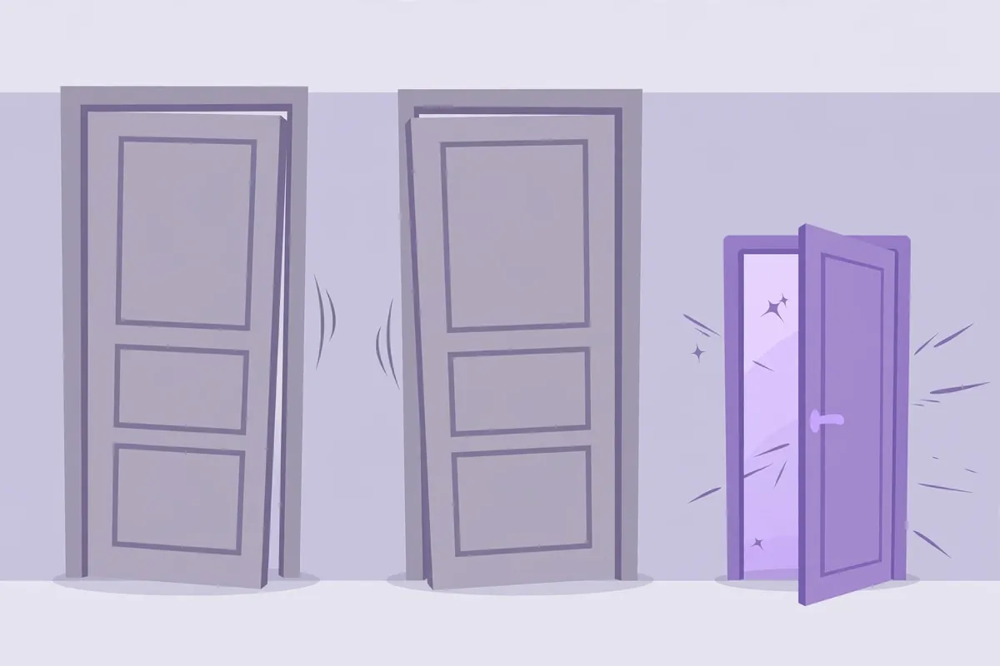
谷歌调整了 Gemini 个人账号的模型权限，10 月 9 日起生效。没有订阅的用户，以后只能用 Flash-Lite，Flash 和 Pro 不再开放。入门付费版 AI Plus 能用 Flash-…
谷歌调整了 Gemini 个人账号的模型权限，10 月 9 日起生效。没有订阅的用户，以后只能用 Flash-Lite，Flash 和 Pro 不再开放。入门付费版 AI Plus 能用 Flash-Lite 和 Flash，Pro 也会被去掉，具体时间谷歌会发邮件通知。AI Pro 和 AI Ultra 不受影响，三个模型都能继续用，还能用 Deep Think。
三个模型分工很直白：Flash-Lite 快而便宜，适合简单问答、改写和摘要；Flash 更均衡，复杂一点的整理也能扛；Pro 负责推理、写代码这类硬活。免费版没了后两者，日常查资料影响不大，拿它分析长文档、跑复杂问题就会明显吃力。谷歌同时给了每个模型低、中、高三档运算力度，选高档答得更全，额度也耗得更快，额度每 5 小时刷新，另有每周上限。
普通人怎么用：轻活继续用免费版；要做长篇分析或写代码，直接换到别的免费工具，别在 Flash-Lite 上反复追问浪费时间。已经订了 AI Plus 的，等邮件确认 Pro 下线时间再决定续不续。
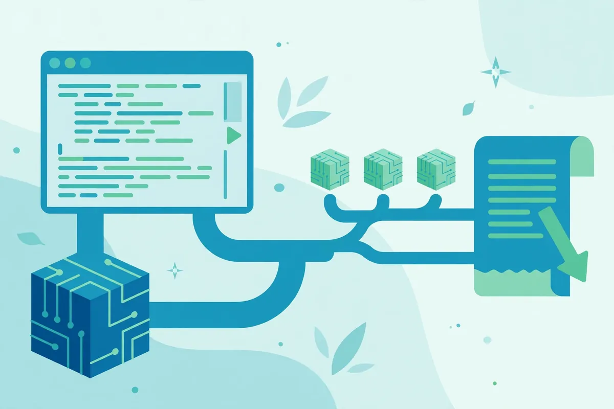
用 Claude Code、Codex 写代码的人有个共同肉疼点：工具好用，账单也涨得快。Together AI 刚放出的免费工具 Together Link，就是冲这个来的。它不动你原来的工具，只在…
用 Claude Code、Codex 写代码的人有个共同肉疼点：工具好用，账单也涨得快。Together AI 刚放出的免费工具 Together Link，就是冲这个来的。它不动你原来的工具，只在启动时把背后的模型换成便宜的开源模型：你照样在 Claude Code 里敲命令，干活的换成了 Kimi K3、GLM 5.3 这类模型，收费按 Together 的价目走，比官方顶级模型低一大截。
装法只有一行命令：`curl -fsSL https://link.together.ai/install | bash`。装完运行 `togetherlink claude` 就能进 Claude Code，界面和操作全不变。它的自动路由会先判断问题难不难：简单的直接派给便宜模型，在 Claude 里选 Opus 档实际跑的是 Kimi K3，选 Fable 档跑 GLM 5.3；你配了 Anthropic 密钥的话，真正的硬骨头才会转回 Claude Opus。每轮对话里敲 `/model` 就能随时切换。工具本身免费，花的只有模型调用费，官方口径是整体能省一半以上。
避坑提醒：它还在 beta 阶段，路由规则和模型名单随时会变；公司机密代码先别往上面送，毕竟请求要过第三方的网关；省钱数字是官方说法，你自己拿一周的真实账单对一下再下结论。
普通人怎么用：个人练手项目、写小脚本、改自己网站这类活儿，先用它跑一周，效果够用就别再为每一行代码付顶级模型的钱。
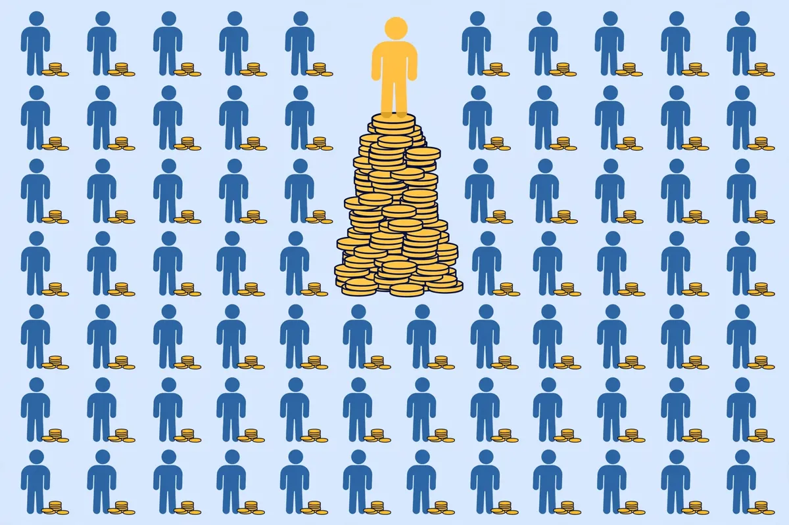
a16z 第七版「生成式 AI 消费应用 Top 100」这次多了个新榜单：不只看流量，还扒了美国消费者的真实刷卡记录。数据有点出人意料：付费用户里花得最狠的 **1%**，贡献了全部消费的 **19…
a16z 第七版「生成式 AI 消费应用 Top 100」这次多了个新榜单：不只看流量，还扒了美国消费者的真实刷卡记录。数据有点出人意料：付费用户里花得最狠的 **1%**，贡献了全部消费的 **19.5%**，比花得最少的后 50% 加起来还多。这 1% 的人 8 月平均每月花 **903 美元**，18 个月涨了 **80%**；而付费用户的中位数每月只有 **25 美元**，基本没涨。
这帮重度用户买的是什么？榜单写得很清楚：编程、生产力、创作类工具占大头，自动化类的 n8n、生成类的 HeyGen、Higgsfield 都在他们的购物车里。说白了，真金白银掏钱的不是图新鲜，是靠这些工具挣钱或者省人工的人。
三个榜单（网页流量、手机活跃、真实消费）全部上榜的产品只有七个：ChatGPT、Claude、Suno、Perplexity、Photoroom、Canva、Notion。ChatGPT 在付费用户数上仍是 Claude 和 Gemini 的约 3 倍。
这组数据对普通人最有用的读法是：别被「人人都在为 AI 花钱」的气氛推着走。现在全美也只有 **4.5%** 的消费者订了 ChatGPT、Gemini 或 Claude 的付费版。你先把免费额度用满，确认某个工具每月真能帮你省出超过订阅费几倍的时间，再掏钱，顺序别反。
普通人怎么用：今天就盘一下自己手里所有 AI 订阅，三个月没打开过的先取消；省下来的钱，留给唯一一个你天天在用的。
Anthropic 10月6日把 Claude for Startups 计划扩容了。符合条件的公司可以拿到 **一整年免费的 Claude Team**，最多 5 个高级席位，外加 **1000 美…
Anthropic 10月6日把 Claude for Startups 计划扩容了。符合条件的公司可以拿到 **一整年免费的 Claude Team**，最多 5 个高级席位，外加 **1000 美元 API 额度**，还能进 Claude Marketplace 做插件、约 Anthropic 应用团队的线上答疑时间。五个人开一年付费账号不是小钱，这次 Anthropic 自己掏了。
门槛写得很清楚：公司成立在 **5 年以内**，或者最近 **2 年内拿过融资**，满足一条就能去 Claude for Startups 页面申请。个人开发者、公司成立六七年又没融资记录的，这轮沾不上边，别浪费时间填表。
请符合条件的团队这样用：席位先给每天真在写代码、写方案的人，1000 美元额度请花在能上线见客户的功能上，比如客服问答、文档处理，别拿去跑着玩。额度烧完之前，把调用成本记成一张表——每个功能每月花多少、带来多少收入——续费谈判时这张表就是你的底气。
避坑提醒：免费期只有一年。产品请别把命脉全绑在某一家模型上，接口层留好替换口子，明年涨价或政策变了，你走得掉。
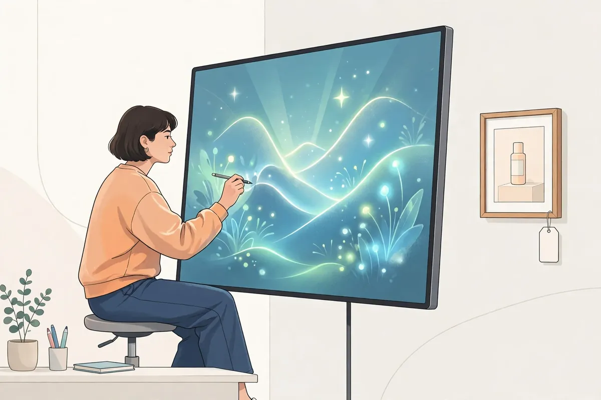
OpenAI 10月5日给 ChatGPT 加了一种图片广告：你在 ChatGPT 里生成图片时，旁边会出现带明确广告标识的产品图，展示使用场景和卖点，跟你正在生成的那张图分开摆放。测试 **10月内…
OpenAI 10月5日给 ChatGPT 加了一种图片广告：你在 ChatGPT 里生成图片时，旁边会出现带明确广告标识的产品图，展示使用场景和卖点，跟你正在生成的那张图分开摆放。测试 **10月内先在美国**跑，首批只邀请一部分广告主。OpenAI 同时补齐转化追踪、归因测量工具，还请了两家第三方来盯广告场合合不合适。
普通用户先搞清一件事：广告只出现在免费档和低价档，付费订阅不带广告。所以你要是发现生图界面开始推产品，不是中毒，是新功能上线了。介意的话，要么忍，要么升级，路就这两条。
做生意的人可以看另一面。ChatGPT 自称每周有 **12 亿**人使用，广告又长在用户正动手做图的时刻——给产品拍场景图、找灵感的人，购买意图通常不低。OpenAI 公布的早期案例里，有广告主的获客成本比其付费搜索基准低了 **15.3%**，这类数字目前全是平台和合作方口径，请先小预算试一周，用你自己后台的成交数据说话，别听汇报下单。
避坑提醒：OpenAI 承诺广告不影响回答内容、对话不给广告主看。投放时请把敏感话题排除干净，品牌安全工具该开的都开上。
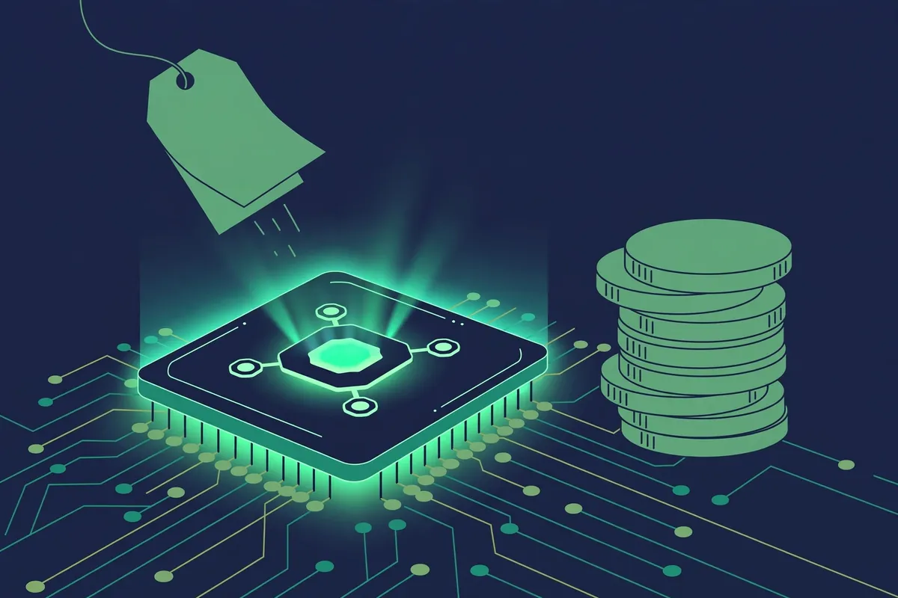
10 月 5 日，自动化工具圈在算同一笔账：OpenAI 的 GPT-6.1 Sol，API 定价每百万输入 token 2 美元、缓存输入 0.1 美元、输出 10 美元。官方定位是"接近 Astr…
10 月 5 日，自动化工具圈在算同一笔账：OpenAI 的 GPT-6.1 Sol，API 定价每百万输入 token 2 美元、缓存输入 0.1 美元、输出 10 美元。官方定位是"接近 Astra 旗舰的智能"，价格却只有旗舰 GPT-5.5（5 美元）的一半不到，更是 Claude Fable 5.1（10 美元）的零头。
它已经铺开了：API、Plus、Pro、Business、Enterprise、Edu 都能用，只不过在 ChatGPT Work 和 Codex 里，还没进普通聊天窗口。OpenAI 还预告了 GPT-6.1 Sol 版的 Dots 智能体"即将到来"。
为什么这事跟普通人有关？因为现在 AI 赚钱的玩法变了：给客户按结果收费、按月收固定服务费，成本按 token 算，中间的差价就是利润。以前用旗舰模型跑高频任务，成本吃掉大半；Sol 把"接近旗舰的推理能力"压到 2 美元，批量处理数据、自动写报告、跑客服智能体这类高频活，第一次有了可观的利润空间。Activepieces 算过一笔：5 亿 token 的处理量，用 Sol 大约 1000 美元就能拿下。
怎么用：如果你在接 AI 自动化单子，或者公司内部有批量任务，把现在调用里最烧钱、逻辑又复杂的那一路，先切到 Sol 跑一周对比效果和账单。简单分类、抽取类任务继续用 Gemini 3 Flash-Lite（0.12 美元）这类更便宜的，复杂推理再上 Sol，分层用最省。
避坑：它还没进 ChatGPT 聊天窗口，想尝鲜得走 API 或 Work/Codex；性能数字来自发布方口径，正式上生产前先小流量实测。
普通人怎么用：哪怕你不写代码，记住这个公式就行——以后找人做 AI 自动化外包，问一句"你们用的什么模型、token 成本多少"，对方报价水分大不大，一听就知道。
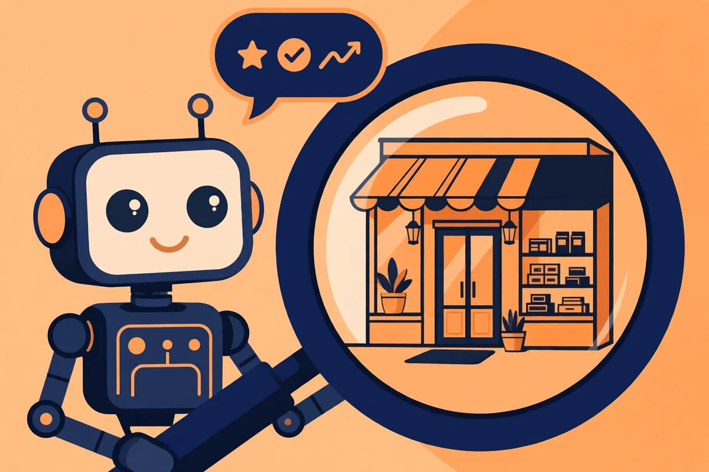
10 月 1 日，内容平台 Contentstack 发布了新工具 Canoe，这是它的第一款独立产品，任何品牌、任何网站都能用，还有免费版。
10 月 1 日，内容平台 Contentstack 发布了新工具 Canoe，这是它的第一款独立产品，任何品牌、任何网站都能用，还有免费版。
它解决的是个新问题：现在买家先问 AI 再逛网站。Bain 的调查说，80% 的消费者至少 40% 的搜索依赖 AI 生成的答案；Gartner 发现 45% 的 B2B 买家用生成式 AI 研究供应商。传统排名工具看不到 AI 答案里写了什么，大多数品牌根本不知道自己有没有被推荐、被推荐时说了什么。Canoe 就是让你"看到智能体看到的东西"。
用法四步：第一步，输入你的品牌网址，Canoe 自动扫描，识别你的业务、产品、买家画像，还会找出最多 10 个竞争对手；第二步，你检查并修正这些信息；第三步，它生成你的买家可能会问 AI 的那些问题；第四步，看结果：AI 是怎么描述你的、赢了还是输给了竞品、下一步该改什么。
Contentstack CEO 的原话很直白：你的下一个客户先见到的是智能体，然后才是你；大多数品牌对智能体在说什么一无所知。
普通人怎么用：开网店、做自媒体、接单的中小商家，去免费版跑一遍。看看当别人问 AI"哪家店靠谱"时，你的名字出不出现、出现时配的是好话还是坏话。缺什么内容补什么——这比盲目投广告实在。
避坑：免费版先体验全流程，觉得值再考虑付费；它给的是"AI 视角的体检报告"，改网站内容、补产品信息这些活，还得自己动手。
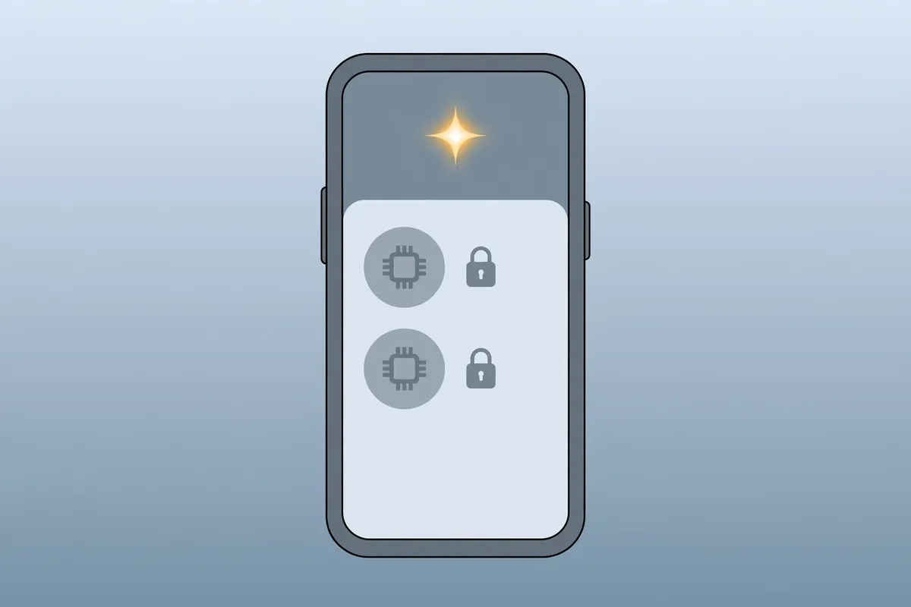
天天免费用 Gemini 的人，10 月 9 号之后手感会变。Google 发了公告：从那天起，没掏钱的免费账号只能用 **Flash-Lite** 一个模型，Flash 和 Pro 直接收回。
天天免费用 Gemini 的人，10 月 9 号之后手感会变。Google 发了公告：从那天起，没掏钱的免费账号只能用 **Flash-Lite** 一个模型，Flash 和 Pro 直接收回。
Flash-Lite 是三档里最轻的：回得快，但只够应付查资料、改改文字、做摘要这种轻活。之前免费账号能蹭到的 Flash（复杂需求）和 Pro（长文分析、编程、硬核推理）都没了。入门付费的 AI Plus 也挨了一刀：Pro 模型同样被拿掉，具体哪天生效，Google 说会发邮件单独通知。AI Pro 和 Ultra 用户不受影响，还多拿了一个 Deep Think——原来只有 99 美元和 199 美元档才有的深度推理，这次下放，等于变相逼你升级。
Google 还加了个"Effort Level"开关：低、中、高三档，调得越高模型越卖力，烧的额度也越多。5 月份它就改过一次计费：按算力扣额度，每 5 小时回血一次，另有每周上限。这次等于把"能用什么模型"也按付费等级切开了。
普通人怎么用：你如果只是拿 Gemini 当搜索引擎和改写工具，几乎没感觉；但手头要是有长文档分析、复杂方案这种重活，抓紧在 10 月 9 号前用 Pro 跑完。之后觉得 Flash-Lite 不够用了，再考虑掏钱——别急着升 Plus，它也被砍了一刀，性价比算清楚再说。
靠 AI 写代码的人，今晚 11 点之后别睡太早。智谱的 GLM Coding Plan 夜间畅用活动到 **10 月 7 日**截止：在 ZCode 和 AutoClaw 这两个 Agent 里调用…
靠 AI 写代码的人，今晚 11 点之后别睡太早。智谱的 GLM Coding Plan 夜间畅用活动到 **10 月 7 日**截止：在 ZCode 和 AutoClaw 这两个 Agent 里调用 GLM-5.3-Flash，每晚 23:00 到第二天 9:00，额度消耗直接记 0。今晚和明晚，是最后两个完整窗口。
规则先说全，免得踩坑。第一，免费只限 ZCode / AutoClaw 里跑的 Flash 模型，别的 Agent 只是额度翻倍，不是全免。第二，9 月 25 日到 10 月 7 日取消了高峰期，全天按 **50%** 积分计费，等于白天干活也半价。第三，有 5 小时/周的限额，触到就得等重置，别把大任务全堆一晚。
另外 GLM-5.3-FlashX 也在滚动开放两周试用，速度能到 200 tokens/s，但烧的是普通 Flash **2.5 倍**的量，适合那种卡脖子的硬任务，平时别开。
普通人怎么用：这两天把攒着的代码活列个单——改 bug、写脚本、补注释这种，留到 23 点之后批量跑。今晚先拿小任务试水，摸清楚 5 小时限额的脾气，明晚再上大活。
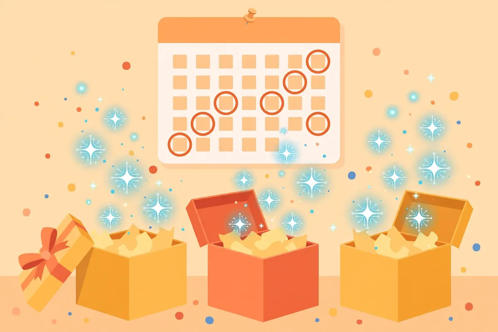
今天第 4 篇说了智谱今明两晚的免费，怕你漏，把 10 月还有效的几笔 AI 免费额度按到期日排一下。信息来自"什么值得买"9 月 26 日的汇总帖，我只挑 10 月 5 日今天还活着的，过期的不列。
今天第 4 篇说了智谱今明两晚的免费，怕你漏，把 10 月还有效的几笔 AI 免费额度按到期日排一下。信息来自"什么值得买"9 月 26 日的汇总帖，我只挑 10 月 5 日今天还活着的，过期的不列。
**10 月 10 日到期：腾讯混元 Hy4 preview。**新用户 14 天每日免费，老用户夜间免费。拿它当主力聊天 AI 的人，这几天重度任务可以往它身上堆。
**10 月 17 日到期：豆包全用户 30 天订阅。**9 月 24 日送的这轮，白拿一个月会员。平时用豆包修图、写东西、做视频脚本的，等于 10 月中旬前不用掏钱。
**11 月 7 日到期：MiniMax 开放平台 M3 / M2 免费试用。**这是给开发者的：调 API 做应用、跑 Agent，一个多月的免费窗口，够做个小项目验证想法了。
三句实在话。第一，免费都有名额和限速，别指望当主力生产力，当"试用装"心态最舒服。第二，领之前先看 App 里的实际规则，汇总帖是 9 月 26 日的，个别可能有变。第三，今天第 4 篇的智谱夜间免费今晚 11 点就开闸，和这三笔不冲突，能叠就叠。
普通人怎么用：今晚花 10 分钟，把豆包和混元的免费领了——都是 App 里点几下的事。开发者把 MiniMax 的试用开了，和智谱的夜间窗口配合，这个 10 月写代码基本不用花钱。
这个国庆，越来越多的人把做攻略交给了 AI。定焦One 10 月 3 日采访了 5 位假期里全程用 AI 规划行程的人，结论很扎心：AI 的攻略"纸面上成立"，一上路就露馅。
这个国庆，越来越多的人把做攻略交给了 AI。定焦One 10 月 3 日采访了 5 位假期里全程用 AI 规划行程的人，结论很扎心：AI 的攻略"纸面上成立"，一上路就露馅。
它擅长什么？景点清单、行程框架、基础信息。开放时间、景点位置，几乎没出过错。整理几十条信息、排个不走回头路的路线，确实比人快。
它栽在哪？栽在"真实情况"四个字上。一位去长白山的游客，AI 说度假村距景区 38 公里、车程 50 分钟，实际开了 **1 小时 50 分钟**——直线距离没错，路况细节 AI 全不知道。去韩国的游客按攻略上午去汉南洞，结果店铺中午才开门，白跑一趟。最绝的是时间概念：有人假期最后一天问"附近有什么营业的馆子"，AI 张口就是"今天 9 月 4 日"——那是他做攻略那天。还有人凌晨登顶等云海，AI 把日出时间算到 **05:49** 分秒不差，却从没提过"云"字。日出对 AI 是天文计算，对人是天气、云量、能见度的综合题。
正确姿势有三条。第一，买票、预约、开门时间，自己再核一遍，AI 说的不算数。第二，问 AI 时把"万一"带上："阴天怎么办""限流了有没有备选"。第三，出发前翻一遍官方公众号、景区电话和地图票务平台，以官方说法为准。
普通人怎么用：让 AI 干它擅长的——先自己在小红书选好想去的地方，再让 AI 串成路线、整理成清单；每天早上只定第一个目的地，剩下的到当地问前台和司机。AI 是副驾驶，方向盘得在你手里。
AYi今天转了Meta首席AI官Alexandr Wang的一句话："活在未来，倒推今天还不存在的那行API。"这是他给"如何从零想出一个估值百亿的创业点子"的答案，极简到只有一句。
AYi今天转了Meta首席AI官Alexandr Wang的一句话："活在未来，倒推今天还不存在的那行API。"这是他给"如何从零想出一个估值百亿的创业点子"的答案，极简到只有一句。
翻译一下：别在今天找机会。先想象三年后的世界长什么样——人人有AI助手、视频一句话生成、杂事全外包；再倒推回来：今天缺哪一行"API"，哪个能力还没被产品化？那就是机会。Scale AI当年就是这么干的：所有人都在聊AI，他去做了AI最缺的那行"API"——数据标注。
他还顺手透露了一个反常识的观察：Meta后台发现，把Muse（Meta的AI助手）用得最猛的，竟然是修水管的、开农场的、开杂货店的——不是程序员。AI的真实用户画像，和科技圈想象的完全相反。
这对普通人的启发很实在：别卷"AI工具评测"了，去看真实的人在为什么付费。水管工用AI干什么？排班、报价、回客户消息——这些土得掉渣的需求，才是真金白银。
普通人怎么用：拿张纸，写下你这个行业里最烦人的3件重复杂事，然后问自己——如果有个AI助手，哪一件能外包给它？答案就是你的第一个AI搞钱方向。别想着改变世界，先解决一条街的麻烦，百亿点子都是这么长出来的。
西安大唐不夜城，一台跟自动售货机差不多大的设备前面天天排长队：游客花 9.9 元，等 3 分钟，拿到一张"穿越回盛唐"的古风照。选模板、拍张脸，AI 把五官合成进汉服场景——汉服游园、骑马扬鞭，模板随…
西安大唐不夜城，一台跟自动售货机差不多大的设备前面天天排长队：游客花 9.9 元，等 3 分钟，拿到一张"穿越回盛唐"的古风照。选模板、拍张脸，AI 把五官合成进汉服场景——汉服游园、骑马扬鞭，模板随便挑。
这不是西安独有。湖北 44 家景区开了 AI 出片提示站，丽江黑龙潭两张 19.9 元，贵州西江千户苗寨搞了体验馆，青海一个项目试运行一周就出了两三百单。从景区铺到商场，逻辑就三条：9.9 元没有决策成本，3 分钟出片不耽误行程，设备往那一摆就开张，不用请摄影师化妆师。
账怎么算？传统旅拍跟拍一天一两千，套餐三五千起；AI 这边一单 9.9，成本主要是设备折旧和电费。有招商公告提到，景区拿不低于 20% 的营业收入分成——景区多了二次消费，运营方赚了流水。拍完还能加价卖明信片、冰箱贴、纪念币，把客单价往上抬。
普通人能抄吗？两条路。重资产：找设备厂商谈，去本地景区、古镇、商场谈点位铺机，核心是点位谈判能力，不是技术。轻资产：线上接单做 AI 古风写真定制，小红书、抖音发对比视频引流，9.9 到 29.9 元一单，用即梦、可灵这类图生图工具出片，几乎零成本。
避坑三件套：别碰"一键换脸"擦边和真人恶搞，肖像权和治安处罚不是闹着玩的；AI 生成图按规定加内容标识；明星脸、动漫 IP 的模板别碰，版权雷区。
普通人怎么用：先别买设备。花一个周末，用手机加 AI 生图工具给朋友做 10 张古风照发小红书，测试有没有人问价——有咨询再谈下一步，这是成本最低的试水方式。